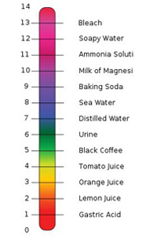

pH is a logarithmic measure of the effective concentration of hydrogen ions in a solution, pH = -log (H+). pH is a measure of the acidity (or basicity) of a solution, with possible values of 0 to 14. Acidic solutions have a pH < 7. For example, the pH of urine is around 6, orange juice is around 3 and lemon juice is around 2. Alkaline (also called basic) solutions have pH > 7. For example, the pH of baking soda in solution is 9, soapy water is 12 and bleach is 13. Neutral solutions have pH = 7. High acidity or alkalinity can cause direct physical damage to the skin, gills and eyes of fish. If wide pH swings were to occur in ponds, lakes and the seas, fish and other organisms would not survive, for various biochemical reasons. Changes in pH affect the toxicity of many dissolved compounds. For example, ammonia becomes more toxic as pH increases.
pH scale. (This is a file from Wikimedia Commons.) http://creativecommons.org/licenses/by/3.0/deed.en
Special indicators are used to measure the pH of solutions. pH indicators are substances that undergo a sharp, easily observable colour change when the pH of a solution changes. Commonly used indicators are methyl orange and phenolphthalein.
pH value can be roughly and quickly measured with pH paper strips, which change colour depending on the pH value of a solution. For example, litmus paper turns red if the environment in a solution is acidic and it turns blue if the environment is basic. Litmus paper does not change colour if a solution is neutral. Using pH strips is convenient and simple. A strip is submerged in the solution of interest and the reading of pH is done by comparing/matching the colour of the strip with the colour range given on the package.

pH indicator paper. (This is a file from Wikimedia Commons.) http://creativecommons.org/licenses/by/3.0/deed.en
A pH meter is used in order to measure pH more precisely. A pH meter consists of a special electrode which is connected to electronic equipment – a meter that displays the pH reading. When they were first invented, pH meters could only be used in lab conditions. Nowadays a pH sensor can be connected to a portable mobile device or a laptop and measurements can be done on the spot, so that there is no need to collect the samples and transport them to the lab.

A Vernier pH sensor connected to a LabQuest MINI transmitter.